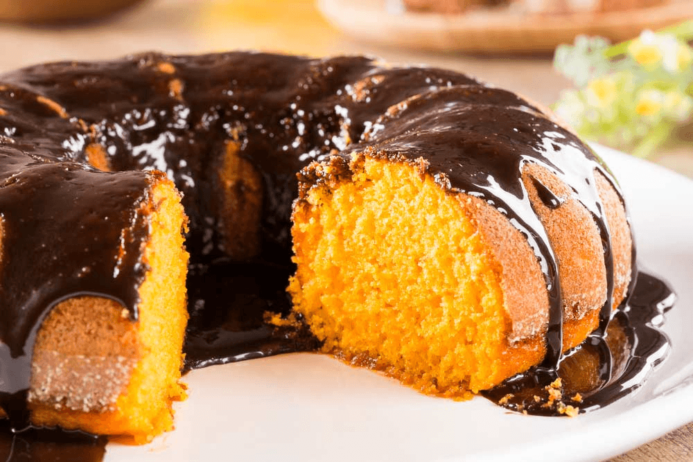
BOLO DE CENOURA COM COBERTURA CREMOSAFofinho, doce na medida e sem açúcar refinado365 Receitas Sem Açúcar,
Sem Glúten e Sem
Lactose
receitas práticas para comer bem todos os dias sem abrir mão do
prazer à mesa
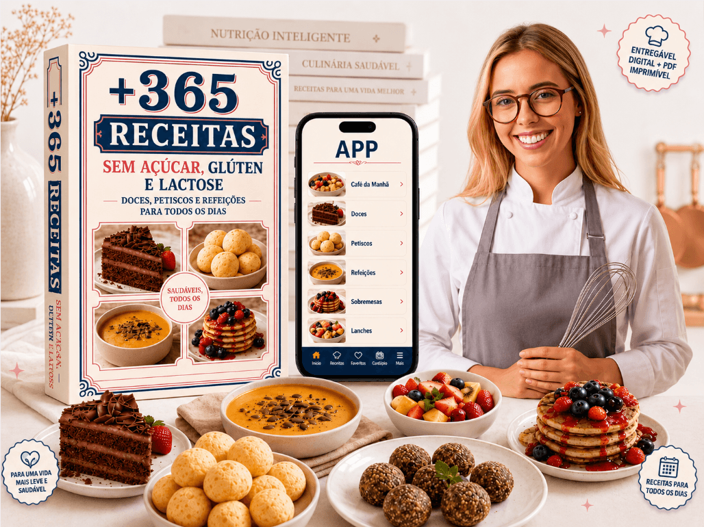
Bolos, pães, sobremesas, lanches e refeições em versões leves e
deliciosas para transformar sua rotina.
📱 Acesso imediato no WhatsApp 🔒 Compra 100% Segura 💗 15 Dias de Garantia Total
Benefícios do Produto:
🧁 365 receitas doces e salgadas🥬 Sem açúcar, sem glúten e sem lactose
📖 Receitas simples e ilustradas🍽️ Café, almoço, jantar e sobremesa
🍴 Mais leveza sem perder o sabor👩🍳 Fáceis para quem não tem prática
✨ Adeus à mesmice e ao sem graça📱 Acesso no celular ou impresso
SIM, QUERO COMER BEM COM MAIS LEVEZA
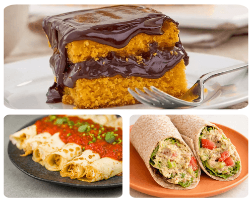
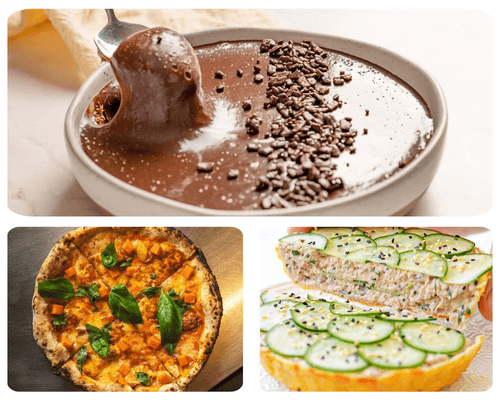
VEJA O QUE VOCÊ VAI PREPARAR:
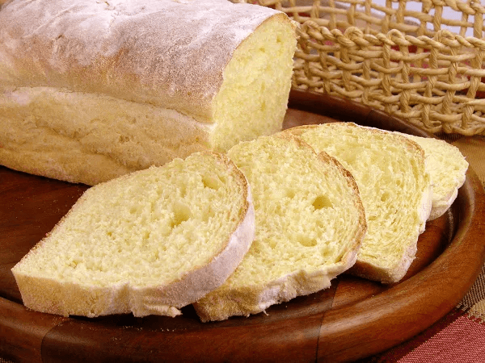
PÃO CASEIRO SEM GLÚTENMacio, simples e perfeito para o café da manhã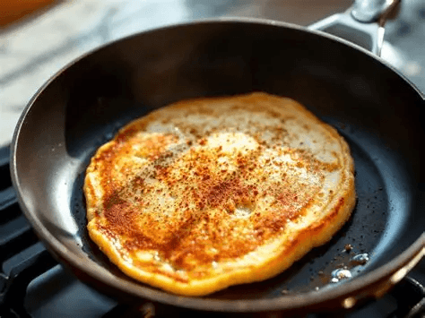
PANQUECA LEVE DE BANANARápida, nutritiva e sem lactose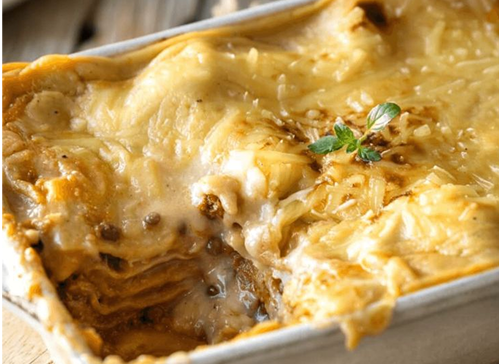
LASANHA CREMOSA SEM GLÚTENConfortável, saborosa e perfeita para a família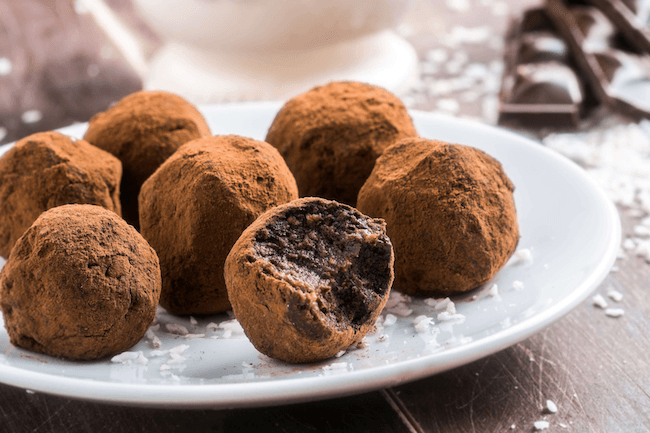
BRIGADEIRO SEM AÇÚCARCremoso, chocolatudo e sem culpa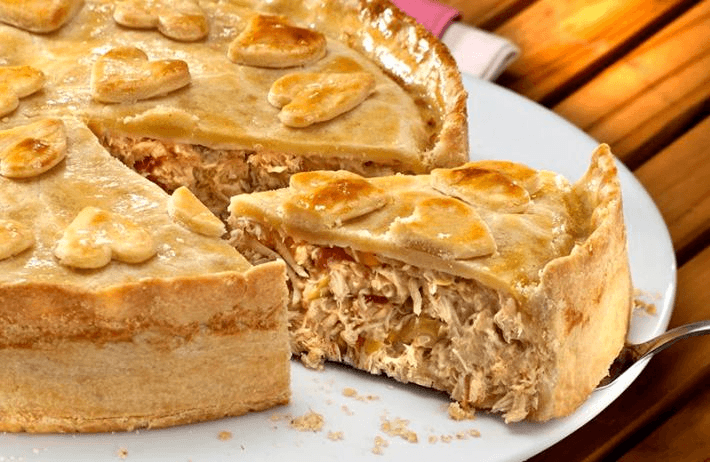
TORTA SALGADA DE FRANGOPrática, leve e ótima para qualquer refeição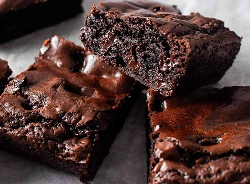
BROWNIE FIT DE CHOCOLATEÚmido, intenso e sem farinha de trigo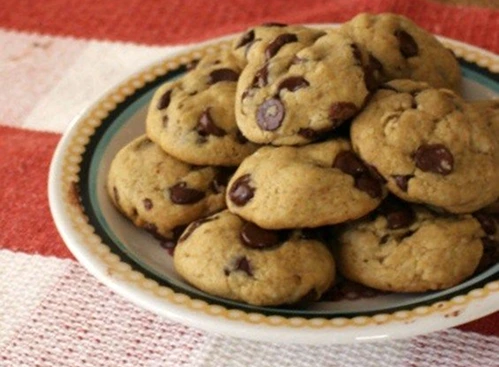
COOKIE CROCANTE SEM GLÚTENCrocante por fora, macio por dentro+ 357 OUTRAS receitas incríveis da Chef Luana!
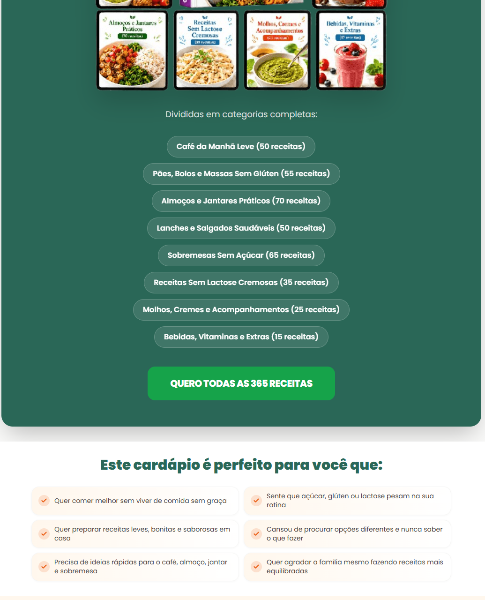
Divididas em categorias completas:
Café da Manhã Leve (50 receitas)Pães, Bolos e Massas Sem Glúten (55 receitas)Almoços e Jantares Práticos (70 receitas)Lanches e Salgados Saudáveis (50 receitas)Sobremesas Sem Açúcar (65 receitas)Receitas Sem Lactose Cremosas (35 receitas)Molhos, Cremes e Acompanhamentos (25 receitas)Bebidas, Vitaminas e Extras (15 receitas)
QUERO TODAS AS 365 RECEITAS
Este cardápio é perfeito para você que:
🟠 Quer comer melhor sem viver de comida sem graça🟠 Sente que açúcar, glúten ou lactose pesam na sua rotina🟠 Quer preparar receitas leves, bonitas e saborosas em casa🟠 Cansou de procurar opções diferentes e nunca saber o que fazer🟠 Precisa de ideias rápidas para o café, almoço, jantar e sobremesa🟠 Quer agradar a família mesmo fazendo receitas mais equilibradas
🎁 PRESENTE ESPECIAL
COMPRE AGORA E RECEBA
+ 3 bônus exclusivos:
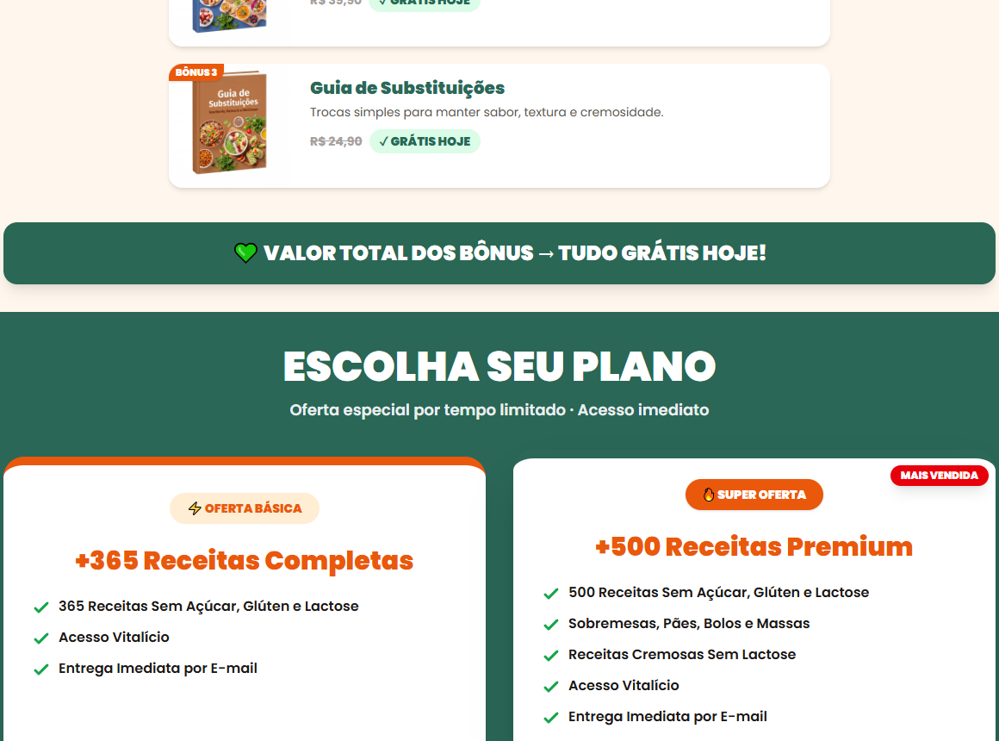
💚 VALOR TOTAL DOS BÔNUS → TUDO GRÁTIS HOJE!
ESCOLHA SEU PLANO
Oferta especial por tempo limitado · Acesso imediato
+365 Receitas Completas
- 365 Receitas Sem Açúcar, Glúten e Lactose
- Acesso Vitalício
- Entrega Imediata por E-mail
+500 Receitas Premium
- 500 Receitas Sem Açúcar, Glúten e Lactose
- Sobremesas, Pães, Bolos e Massas
- Receitas Cremosas Sem Lactose
- Acesso Vitalício
- Entrega Imediata por E-mail
🎁 Cardápio de 30 Dias
🎁 Guia de Substituições Inteligentes
🎁 Lista de Compras Essenciais
3.500+ PESSOAS JÁ TRANSFORMARAM SUA
ROTINA NA COZINHA
Veja o que quem já comprou está falando.
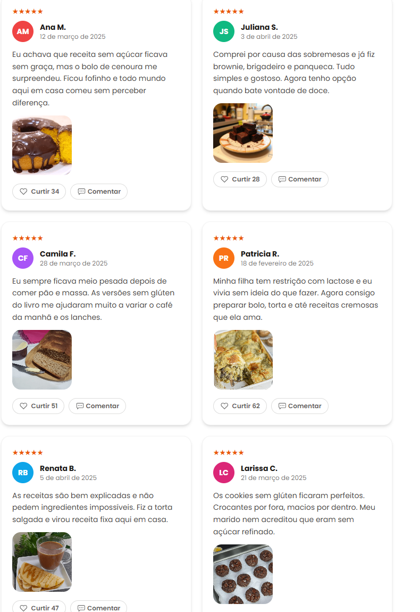
🏅 Garantia Incondicional de 15 Dias
Teste as receitas por 15 dias. Se não ficar 100% satisfeito(a), devolvemos todo o seu dinheiro, sem perguntas.QUERO COMPRAR COM SEGURANÇA
Teste as receitas por 15 dias. Se não ficar 100% satisfeito(a), devolvemos todo o seu dinheiro, sem perguntas.QUERO COMPRAR COM SEGURANÇA
Como você vai RECEBER:
Acesso liberado na hora, do seu jeitinho ✨
📱No CelularAcesse onde estiver💻No ComputadorTela grande pra cozinhar🖨️Para ImprimirSeu caderno de receitas⚡Envio ImediatoLiberado em segundos
FAQ
Dúvidas Frequentes
As receitas ficam gostosas de verdade?
Sim. As receitas foram pensadas para manter sabor, textura e aparência de comida comum, mas em versões sem açúcar, sem glúten e sem lactose.
São receitas saudáveis de verdade?
São opções práticas para deixar a rotina mais leve e saborosa.
Preciso comprar ingredientes caros ou difíceis?
Não. As receitas priorizam ingredientes acessíveis.
As receitas servem para a família toda?
Sim, foram criadas para todos aproveitarem.
Como vou receber o produto?
O acesso é enviado imediatamente após a confirmação.